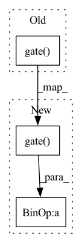

Pattern ID :24665

Before Change
condition = self.condition(condition)
out += condition
out = self.gate(out)
out += x
return out
After Change
if c != None:
y = self.convc(c) + y
y = self.gate(y) + x
return y
@lru_cache(maxsize=64)
In pattern: SUPERPATTERN
Frequency: 3
Non-data size: 3
Instances
Fragment ID: 76488911
Project Name: vvvm23/vqvae-2
Commit Name: e15b9e3d7c13f912682873648e5aaaf81b1dfec5
Time: 2021-06-02
Author: alexander.f.mckinney@durham.ac.uk
File Name: pixelsnail.py
M Class Name: GatedResBlock
N Class Name: GatedResBlock
M Method Name: forward(4)
N Method Name: forward(4)
M Parent Class: nn.Module
N Parent Class: HelperModule
M File Name: pixelsnail.py
N File Name: pixelsnail.py
M Start Line: 136
M End Line: 152
N Start Line: 70
N End Line: 82
'>
Before Change
def interpolate(self, x):
upsampled = F.interpolate(x.unsqueeze(1), self.output_size, mode="linear", align_corners=True).squeeze(1)
if self.trainable:
upsampled = upsampled * self.gate(self.mask.unsqueeze(0))
return upsampled
def forward(self, x):
After Change
def interpolate(self, x):
upsampled = F.interpolate(x.unsqueeze(1), self.output_size, mode="linear", align_corners=True).squeeze(1)
if self.trainable:
upsampled = upsampled * self.gate(self.mask.unsqueeze(0)) * 2.0
return upsampled
def forward(self, x):
'>
Fragment ID: 76488910
Project Name: jdb78/pytorch-forecasting
Commit Name: cd5a02612feeae9088d6fd82124b5556c335afc1
Time: 2020-08-07
Author: beitner.jan@bcg.com
File Name: pytorch_forecasting/models/temporal_fusion_transformer/sub_modules.py
M Class Name: TimeDistributedInterpolation
N Class Name: TimeDistributedInterpolation
M Method Name: interpolate(2)
N Method Name: interpolate(2)
M Parent Class: nn.Module
N Parent Class: nn.Module
M File Name: pytorch_forecasting/models/temporal_fusion_transformer/sub_modules.py
N File Name: pytorch_forecasting/models/temporal_fusion_transformer/sub_modules.py
M Start Line: 21
M End Line: 23
N Start Line: 21
N End Line: 23
'>
Before Change
def forward(self, x, skip):
if self.trainable_add:
skip = skip * self.gate(self.mask)
output = self.norm(x + skip)
return output
After Change
def forward(self, x, skip):
if self.trainable_add:
skip = skip * self.gate(self.mask) * 2.0
output = self.norm(x + skip)
return output
'>
Fragment ID: 76488913
Project Name: jdb78/pytorch-forecasting
Commit Name: cd5a02612feeae9088d6fd82124b5556c335afc1
Time: 2020-08-07
Author: beitner.jan@bcg.com
File Name: pytorch_forecasting/models/temporal_fusion_transformer/sub_modules.py
M Class Name: AddNorm
N Class Name: AddNorm
M Method Name: forward(3)
N Method Name: forward(3)
M Parent Class: nn.Module
N Parent Class: nn.Module
M File Name: pytorch_forecasting/models/temporal_fusion_transformer/sub_modules.py
N File Name: pytorch_forecasting/models/temporal_fusion_transformer/sub_modules.py
M Start Line: 82
M End Line: 82
N Start Line: 82
N End Line: 82